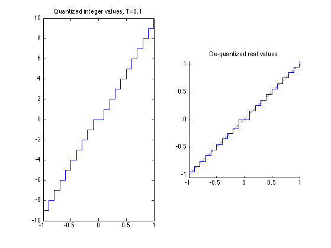
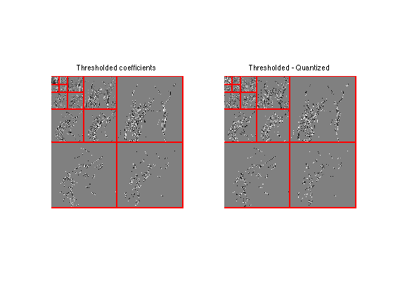
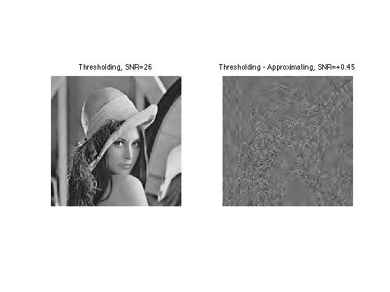
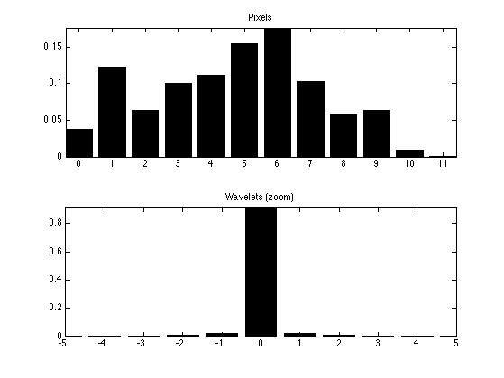
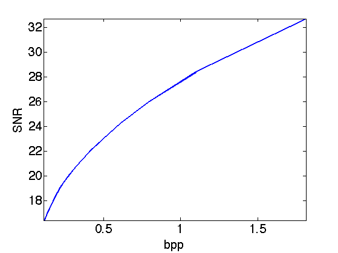
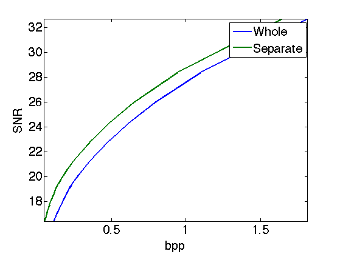

Image Compression with Wavelets
This numerical tour uses wavelets to perform image compression. We consider a simple model for compression, where we only estimate the number of bits of the compressed data, without really performing the actual entropic coding.
Contents
Installing toolboxes and setting up the path.
You need to download the following files: signal toolbox and general toolbox.
You need to unzip these toolboxes in your working directory, so that you have toolbox_signal and toolbox_general in your directory.
For Scilab user: you must replace the Matlab comment '%' by its Scilab counterpart '//'.
Recommandation: You should create a text file named for instance numericaltour.sce (in Scilab) or numericaltour.m (in Matlab) to write all the Scilab/Matlab command you want to execute. Then, simply run exec('numericaltour.sce'); (in Scilab) or numericaltour; (in Matlab) to run the commands.
Execute this line only if you are using Matlab.
getd = @(p)path(p,path); % scilab users must *not* execute this
Then you can add the toolboxes to the path.
getd('toolbox_signal/'); getd('toolbox_general/');
Wavelet Domain Quantization
Image compression is perfomed by first quantizing the wavelet coefficients of an image.
A scalar quantizer of step size T uses the function floor. It has a twice larger zero bins.
Create values evenly spaced for quantization.
v = linspace(-1,1, 2048);
Bin size for the quantization. The larger, the more agressive the compression.
T = .1;
For compression, we compute quantized integer values.
vI = floor(abs(v/T)).*sign(v);
For decompression, we compute de-quantized values from vI, which are chosen as the mid-point of each quantization bin.
vQ = sign(vI) .* (abs(vI)+.5) * T;
Display the quantization curve.
clf; subplot(1,2,1); plot(v, vI); axis('tight'); title(strcat(['Quantized integer values, T=' num2str(T)])); subplot(1,2,2); hold('on'); plot(v, vQ); plot(v, v, 'r--'); axis('equal'); axis('tight'); title('De-quantized real values');
Quantization and Approximation of Wavelet Coefficients
Quantization of wavelet coefficients set to 0 those coefficients which are smaller than T, but it also modify the values of larger coeffiients. It thus creates an error that is slightly larger than simply performing an approximation with hard thresholding at T.
First we load an image.
n = 256;
M = rescale( load_image('lena', n) );
Compute its wavelet transform.
Jmin = 4; MW = perform_wavelet_transf(M,Jmin, +1);
Exercice 1: (check the solution) Compute the coefficients MWT obtained by thresholding at T the coefficients MW. Compute the coefficients MWQ obtained by quantizing with bin size T the same coefficients. Display them using the function plot_wavelet.
exo1;
Exercice 2: (check the solution) Compare the effect of quantizing at T=.2 and thresholding at T=.2 the wavelet coefficients of an image.
exo2;
Exercice 3: (check the solution) Compute a bin size T0 to quantize the original M itself to obtained MQ0 such that norm(M-MQ,'fro') is as close as possible to the error obtained with wavelet domain quantization.
exo3;
Spatial quantization step T0=0.089.

Entropy Coding the Wavelet Coefficients
Actually store the quantized coefficients in a file, one need to compute a binary code from MWI. The length of this code is the number of bits used by the compressor, which typically increases when T decays toward 0.
To reduce the number of bits, an entropic coder makes use of the statistical distribution of the quantized values.
First we quantize the coefficients.
MWI = floor(abs(MW/T)).*sign(MW); MWQ = sign(MWI) .* (abs(MWI)+.5) * T;
Assuming that all the coefficients of MWI are drawn independently from the same distribution with histogram h, the minium bit per pixel achievable is the Entropy lower bound.
E = -\sum_i \log2(h(i))*h(i)
Huffman trees and more precisely block-Huffman tree codes get increasingly closer to this bound when the data size increases. Arithmetic coders also achieves very good results and are fast to compute.
Compute the nomalized histogram of the quantized wavelet coefficients.
a = max(abs(MWI(:))); t = -a:a; h = hist(MWI(:), t); h = h/sum(h);
Compute the histogram of the quantized pixels or the original image.
t0 = 0:1/T0;
MI = floor(abs(M/T0)); % quantized pixel values
h0 = hist(MI(:), t0); h0 = h0/sum(h0);
Display the histograms.
clf; subplot(2,1,1); bar(t0,h0); axis('tight'); title('Pixels'); subplot(2,1,2); bar(t,h); axis([-5 5 0 max(h)]) title('Wavelets (zoom)');
Exercice 4: (check the solution) Compute the entropy lower bound for the quantized wavelet coefficients and for the quantized pixel values. Take care of log2(0) when h(i)=0.
exo4;
Pixels entropy: 3.2 Wavelet entropy: 0.72
Exercice 5: (check the solution) Compute, for various threshold T, the number of bits per pixels E(T) of the quantized wavelet coefficients, and the wavelet decompression error err(T), compute using SNR. Display the rate distortion curve err as a function of E.
exo5;
Scale-by-scale Entropy Coding
Wavelet coefficients of an image does not have the same distribution accross the scales. Taking this into account can further reduce the number of bits for coding.
Quantize the coeffients.
T = .1; MWI = floor(abs(MW/T)).*sign(MW);
Extact the fine scale wavelet coefficients.
MWH = MWI(1:n/2,n/2+1:n); MWV = MWI(n/2+1:n,1:n/2); MWD = MWI(n/2+1:n,n/2+1:n);
Display.
clf; imageplot(MWH,'Horizontal',1,3,1); imageplot(MWV,'Vertical',1,3,2); imageplot(MWD,'Diagonal',1,3,3);

Exercice 6: (check the solution) Extract the three fine scale wavelet coefficients (horizontal, vertical, diagonal directions) and quantize them, for instance with T=.1. Compute the entropy of the three sets together, and compute the entropy of each set.
exo6;
Entropy, all: 0.287 Entropy, hor: 0.466 Entropy, vert: 0.212 Entropy, diag: 0.157
Exercice 7: (check the solution) Compare the number of bits needed to code all the wavelet coefficients together, and the number of bits needed to code independantly each scale of wavele coefficients for Jmin=4<=j<=log2(n)-1 (and group together the remaining coefficients for j<Jmin).
exo7;
nb.bis, whole: 0.719 bpp nb.bis, separate: 0.58 bpp
Exercice 8: (check the solution) Compute the rate distortion curve obtained by coding the coefficient separately through the scale, and compare with the rate distortion curve obtained by coding the coefficients as a whole.
exo8;